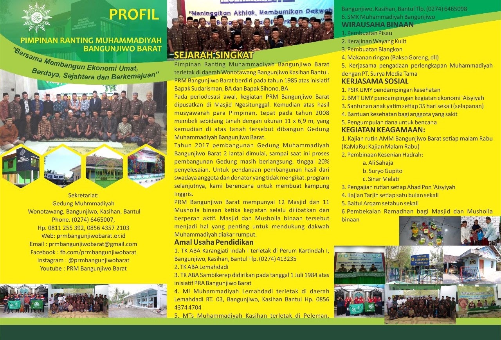

Tentang Kami
Profil & Sejarah PRM Bangunjiwo Barat
Pimpinan Ranting Muhammadiyah Bangunjiwo Barat terletak di daerah Wonotawang, Kalurahan Bangunjiwo, Kapanewon Kasihan, Kabupaten Bantul, D.I. Yogyakarta.
Sejarah Singkat
PRM Bangunjiwo Barat berdiri pada tahun 1985 atas inisiatif Bapak Sudarisman, BA dan Bapak Sihono, BA. Pada periodesasi awal, kegiatan PRM Bangunjiwo Barat dipusatkan di Masjid Ngesitunggal.
Pada tahun 2008, atas hasil musyawarah para Pimpinan, dibeli sebidang tanah dengan ukuran 11 x 6,9 m di Wonotawang, yang kemudian dibangun Gedung Muhammadiyah Bangunjiwo Barat (pembangunan 2 lantai dimulai tahun 2017 dari swadaya anggota dan donatur).
Kegiatan Keagamaan & Penghargaan
- Kajian rutin AMM Bangunjiwo Barat setiap malam Rabu (KaMaRu: Kajian Malam Rabu)
- Pembinaan Kesenian Hadrah: Ali Sahaja, Suryo Gupito, dan Sinar Melati
- Pengajian rutin setiap Ahad Pon ’Aisyiyah & Kajian Tarjih bulanan
- Baitul Arqam setahun sekali & Pembekalan Ramadhan bagi Masjid/Mushola binaan
Wirausaha Binaan & Kerjasama Sosial
Wirausaha Warga Binaan:
- Pembuatan Pisau Tradisional
- Kerajinan Tatah Sungging Wayang Kulit
- Pembuatan Blangkon Gaya Yogyakarta
- Kuliner & Makanan Ringan (Bakso Goreng, dll.)
- Pengadaan Perlengkapan Muhammadiyah (PT Surya Media Tama)
Kerjasama Sosial & Kampus:
- PSIK UMY (Pendampingan Kesehatan Masyarakat)
- BMT UMY (Pendampingan Kegiatan Ekonomi ’Aisyiyah)
- Santunan Anak Yatim rutin setiap 35 hari sekali (Selapanan)
- Bantuan Kesehatan bagi Anggota yang Sakit & Pengumpulan Dana Bencana
Dokumentasi Visual Asli
Klik foto untuk memperbesar
Galeri Foto & Dokumentasi (1 Foto)

Perbesar
Arsip Dokumen Resmi Persyarikatan